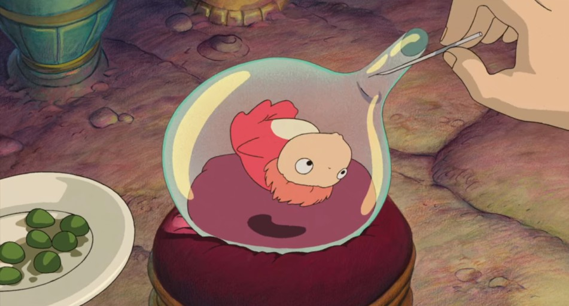
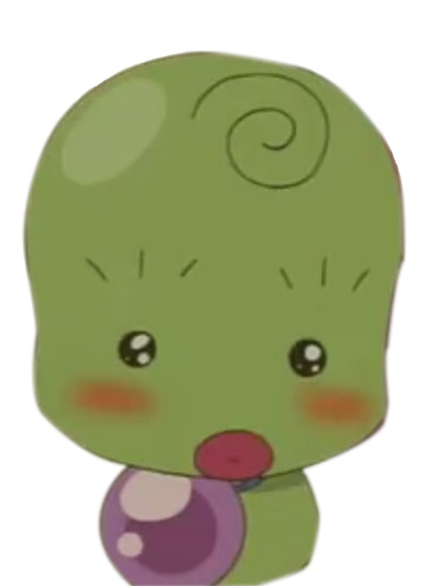

Kim Seoyeon's Page
Information
Name: 김서연
Age: 21 (2005)
Education: 이화여자대학교
Major: 컴퓨터공학
MBTI: ESTP
Activities
- 2024 이화여자대학교 호크마멘토
- 2024 이화여자대학교 문화기획동아리 PartyE 부장
- 2024 서울 연합 밴드동아리 파포리 임원진
- 2024 이화여자대학교 모교방문단
- 2024 이화 DnA Lab 활동 소그룹 선정, 프로젝트 이수
- 2024 이화여자대학교 중앙 알고리즘, 프로그래밍 동아리 EDOC 18기
Programming
Today's TMI

요즘은 토플 열공 중 . . .